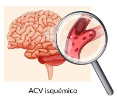
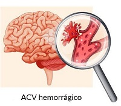

Un accidente cerebrovascular sucede cuando el flujo de sangre
a una parte del cerebro se detiene.
Algunas veces, se denomina "ataque cerebral".
Si el flujo sanguíneo se detiene por más de pocos segundos,
el cerebro no puede recibir nutrientes y oxígeno.
Las células cerebrales pueden morir, lo que causa
daño permanente.
Un accidente cerebrovascular se presenta cuando
un vaso sanguíneo en el cerebro se rompe,
causando un sangrado dentro de la cabeza.
Causas
Hay dos tipos principales de accidente cerebrovascular, el
accidente cerebrovascular isquémico y el
accidente cerebrovascular hemorrágico.
El accidente cerebrovascular isquémico ocurre
cuando un vaso sanguíneo que irriga sangre al cerebro resulta
bloqueado por un coágulo de sangre. Esto puede suceder de dos
maneras:
·Se puede formar un coágulo en una arteria que ya está muy estrecha.
Esto se denomina accidente cerebrovascular trombótico.
·Un coágulo se puede desprender de otro lugar de los vasos
sanguíneos del cerebro, o de alguna parte en el cuerpo,
y trasladarse hasta el cerebro. Esto se denomina embolia cerebral
o accidente cerebrovascular embólico.
Los accidentes cerebrovasculares isquémicos también pueden
ser causados por una sustancia pegajosa llamada placa que puede
taponar las arterias.

Un accidente cerebrovascular hemorrágico ocurre cuando un vaso
sanguíneo de una parte del cerebro se debilita y se rompe.
Esto provoca que la sangre se escape hacia el cerebro.
Algunas personas tienen defectos en los vasos sanguíneos del
cerebro que hacen que esto sea más probable.
Estos defectos pueden incluir:
Aneurisma (un área débil en la pared de un vaso sanguíneo
que provoca que al vaso se le forme una protuberancia o una
burbuja en la parte exterior).
Malformación arteriovenosa (MAV; una conexión anormal entre
las arterias y venas).
Angiopatía cerebral amiloide (ACA: una afección en la que
las proteínas amiloides se acumulan en las paredes de las
arterias del cerebro).

Síntomas
Los signos y síntomas del accidente cerebrovascular incluyen:
Dificultad para hablar y entender lo que otros están diciendo.
Se puede experimentar confusión, dificultar para articular las
palabras o para entender lo que se dice.
Parálisis o entumecimiento de la cara, el brazo o la pierna.
Puedes desarrollar entumecimiento súbito, debilidad o parálisis
en la cara, el brazo o la pierna. Esto a menudo afecta solo un
lado del cuerpo. Trata de levantar ambos brazos sobre la cabeza
al mismo tiempo. Si un brazo comienza a caer, es posible que
estés sufriendo un accidente cerebrovascular. Además, un lado de
su boca puede caerse cuando trates de sonreír.
Problemas para ver en uno o ambos ojos. Repentinamente, puedes
tener visión borrosa o ennegrecida en uno o ambos ojos, o puedes
ver doble.
Dolor de cabeza. Un dolor de cabeza súbito y grave, que puede
estar acompañado de vómitos, mareos o alteración del conocimiento,
puede indicar que estás teniendo un accidente cerebrovascular.
Problemas para caminar. Puedes tropezar o perder el equilibrio.
También puedes tener mareos repentinos o pérdida de coordinación.
Pruebas y exámenes
En el hospital, es probable que te realicen al menos un estudio
por imágenes para que tu médico pueda observar tu cerebro,
ver cuánto daño sufriste y en qué lugar ocurrió el accidente
cerebrovascular. Algunos de los estudios por imágenes pueden
incluir:
Tomografía computarizada (TC). Una TC utiliza rayos X para tomar fotos del cerebro.
Una TC de la cabeza es, por lo general, uno de los primeros
estudios que se realizan en el caso de un accidente cerebrovascular.
Una TC puede mostrar hemorragia en el cerebro o daños en las
células del cerebro. La TC también puede identificar otros problemas
que pueden causar los síntomas del accidente cerebrovascular.
Imagen por resonancia magnética (IRM). La IRM utiliza un potente imán
y ondas radioeléctricas para tomar imágenes del cerebro.
La IRM puede mostrar los cambios en el cerebro producidos por un
accidente cerebrovascular antes que la TC. La IRM también puede
mostrar hemorragias o problemas de circulación sanguínea.
Puede descartar otros problemas como tumores que podrían causar
síntomas similares a los de un accidente cerebrovascular.
Angiografía por TC o RM. Una angiografía es una
película radiográfica de los vasos sanguíneos y del flujo de la
sangre a través de ellos. Se inyecta un tinte en las venas para
obtener una imagen detallada de los vasos sanguíneos después del
accidente cerebrovascular. Una angiografía por TC se realiza con
una TC y una angiografía por RM se realiza con una IRM.
Ultrasonido de carótida. El ultrasonido de carótida
es un estudio que utiliza ondas sonoras para crear una imagen
de las arterias carótidas, que suministran sangre al cerebro.
Usado a menudo en conjunto con una angiografía por TC o RM,
el ultrasonido de carótida muestra si hay acumulación de placa
en las arterias que pudiera estar bloqueando el flujo de sangre
al cerebro.
Ultrasonido Doppler transcraneal (DTC). El ultrasonido Doppler
es un estudio que utiliza ondas sonoras para medir el flujo
sanguíneo. También usado con una angiografía por TC o RM,
el DTC ayuda a tu médico a identificar cuál de las arterias de
tu cerebro está bloqueada.
Electroencefalograma (EEG). Un EEG se realiza
con menos frecuencia. Este estudio graba la actividad eléctrica
del cerebro para verificar que tus síntomas de accidente
cerebrovascular no sean causados por una convulsión.
Las convulsiones pueden causar síntomas como problemas de
movimiento y confusión. Estos síntomas pueden confundirse con
los de un accidente cerebrovascular o un accidente isquémico
transitorio (AIT). Durante este estudio, se colocarán electrodos
adhesivos en tu cabeza, con cables conectados a una máquina.
La máquina graba las señales eléctricas recogidas por los
electrodos.
Electrocardiograma (ECG o EKG). Este estudio detecta y registra
la actividad eléctrica del corazón.
Puede ayudar a tu médico a descubrir si el accidente
cerebrovascular fue causado por fibrilación atrial.
Un ECG puede realizarse durante una actividad física para
monitorear el corazón mientras trabaja bajo esfuerzo.
Tratamiento
El tratamiento de emergencia para el accidente cerebrovascular depende de si estás
teniendo un accidente cerebrovascular isquémico o un accidente cerebrovascular que
implique sangrado dentro del cerebro (hemorrágico).
Accidente cerebrovascular isquémico
Medicamentos de emergencia por vía intravenosa. La terapia con medicamentos
que pueden disolver un coágulo debe administrarse dentro de las 4,5 horas a
partir del momento en que se iniciaron los síntomas, si se administra por vía
intravenosa.
·Procedimientos endovasculares de emergencia. Los médicos a
veces tratan los accidentes cerebrovasculares isquémicos directamente dentro
del vaso sanguíneo bloqueado. Se ha demostrado que el tratamiento endovascular
mejora significativamente los resultados y reduce la discapacidad a largo plazo
después del accidente cerebrovascular isquémico. Estos procedimientos deben
realizarse lo antes posible.
Accidente cerebrovascular hemorrágico
El tratamiento de emergencia del accidente cerebrovascular hemorrágico se centra en
controlar el sangrado y reducir la presión en el cerebro causada por el exceso de líquido.
Algunas opciones de tratamiento son:
Medidas de emergencia. Si tomas medicamentos anticoagulantes para
prevenir coágulos sanguíneos, se te pueden administrar medicamentos o transfusiones de
productos sanguíneos para contrarrestar los efectos de los anticoagulantes.
También se te pueden administrar medicamentos para reducir la presión en el cerebro.
·Cirugía.Si el área del sangrado es grande, el médico puede realizar una
cirugía para extraer la sangre y aliviar la presión en el cerebro. La cirugía también se puede
utilizar para reparar problemas vasculares asociados con accidentes cerebrovasculares hemorrágicos.
Extirpación quirúrgica de la malformación arteriovenosa. Los cirujanos pueden extirpar
una malformación arteriovenosa (AVM, por sus siglas en inglés) más pequeña si está ubicada en un área
accesible del cerebro. Esto elimina el riesgo de ruptura y reduce el riesgo de accidente cerebrovascular
hemorrágico.
Radiocirugía estereotáctica. Al aplicar múltiples haces de radiación altamente enfocada,
la radiocirugía estereotáctica es un tratamiento avanzado mínimamente invasivo usado para reparar
malformaciones de los vasos sanguíneos.
Expectativas
Con respecto a la esperanza de vida tras un ictus, debemos de tener en consideración la variable
de la edad de las personas que lo sufren. De hecho, un 75% de los ictus afectan a
personas mayores de 65 años. Poniendo la lupa en esta franja de edad, un 41,5% de los casos dejan
secuelas de dependencia moderada en los pacientes y un 16% fallecen antes de un año, según un estudio
del IDIAP (Instituto Universitario de Investigación en Atención Primaria Jordi Gol).
Las conclusiones del estudio indican que entre los 75 y los 84 años se concentra la frecuencia más
elevada de sufrir un ictus. El número de casos es similar entre hombres y mujeres en todos los grupos
de edad. Ahora bien, a partir del período de 75 años bajan los casos en los hombres mientras que en las
mujeres se incrementan.
Dicho estudio también refleja que la hipertensión arterial no solo representa el factor de riesgo
cardiovascular más prevalente, sino que también es el que se asocia a mayor riesgo relativo
(se multiplica por ocho) de sufrir un primer episodio de ictus, seguido por la fibrilación auricular
(se multiplica por seis).